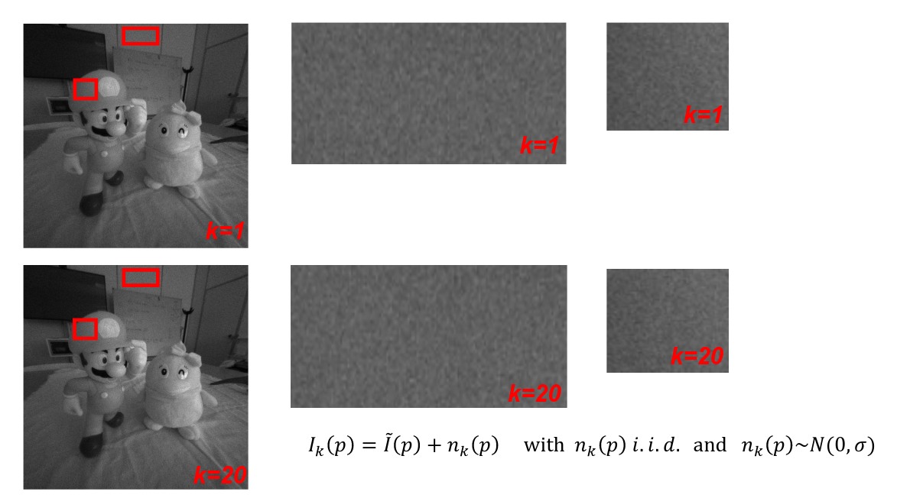

Noise
It may happen that, after a photo is captured (here's how ), it may present some sort of noise: irregularities in the image due to the Lenses or the environment.
Signal-to-noise ratio
SNR is the intensity of noise measured at a pixel under perfect conditions. It may vary due to presence of random nose. The main source can be:
- Photon shot noise: the time between photon arrivals at a pixel is governed by a Poisson statistics, and thus the number of photons collected during exposure time is not constant.
- Electronic Circuitry Noise: It is generated by the electronics which reads-out the charge and amplifies the resulting voltage signal.
- Quantization Noise: related to the final ADC conversion (in digital cameras).
- Dark Current Noise: a random amount of charge due to thermal excitement is observed at each pixel even though the sensor is not exposed to light.
SNR is measured in decibels () or bits ()
Visualizing and understanding the noise

Where k is the instant in which the photo as been taken and N is the Gaussian (normal) distribution . In order to remove the noise, we can extract the initial pixel as:
This is if we have a multitude of photos, what if we have a single one? We may use the neighborhood of the pixel to try and guess its "true" value. ==> And that is what we call an Image filters .